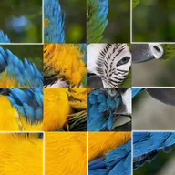

Поворот плиток

Делит слой на сетку плиток и поворачивает изображение в каждой плитке отдельно.
Настройки
| Настройка | Тип | Диапазон | По умолчанию |
|---|---|---|---|
| Поворот | Угол | от -3600° до 3600° | 45° |
| Смещение | Точка (X, Y) | от -5000 px до 5000 px | 0 px, 0 px |
| Количество | Число | от 0.5 до 200 | 10 |
| Растяжение | Точка (X, Y) | от 0.01 до 10 | 1, 1 |
| Угол | Угол | от -3600° до 3600° | 0° |
| Случайно | Число | от 0% до 100% | 0% |
| Сид | Число | от 0 до 5 | 0 |